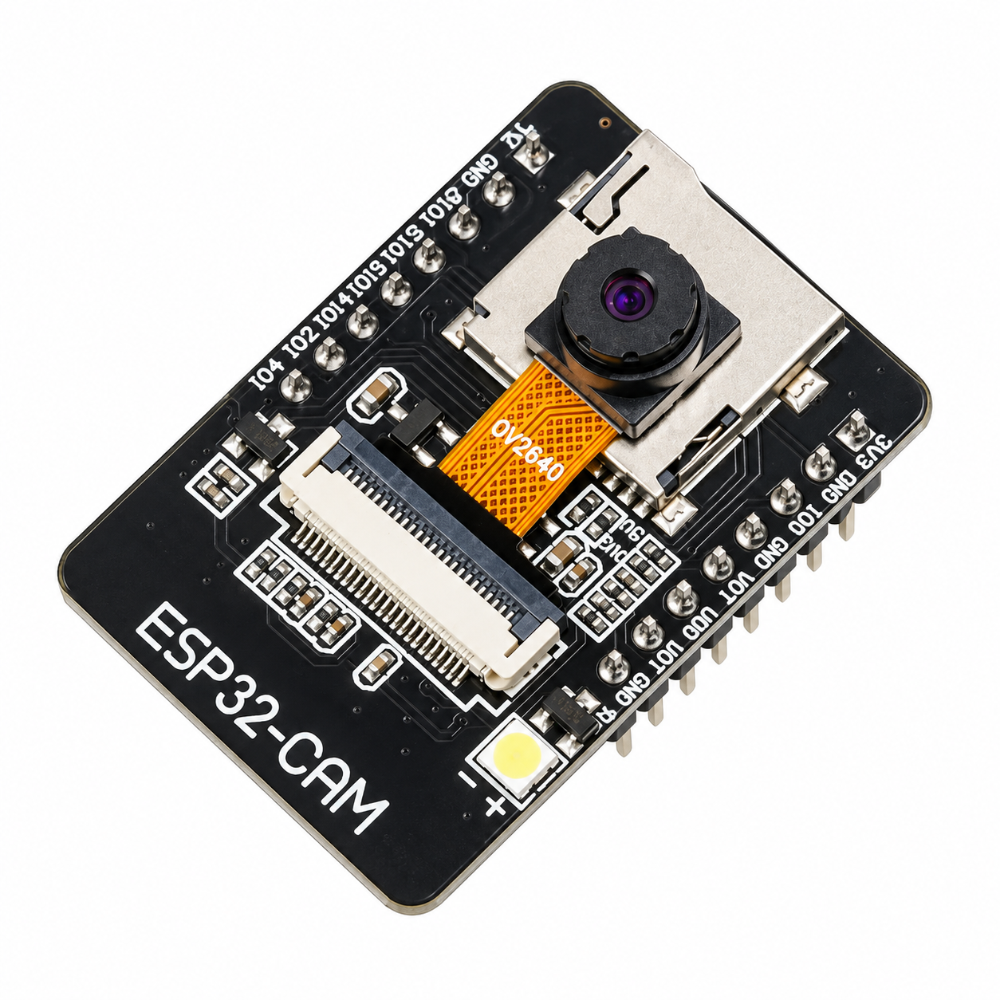

ESP32_CAM_Motion_Snapshot_System.ino

Motion Snapshot System

To develop a motion-activated snapshot system using an AI-Thinker ESP32-CAM, HC-SR501 PIR motion sensor, active buzzer and SSD1306 OLED display. The system automatically captures a JPEG image when motion is detected and provides manual capture and image viewing through a Wi-Fi dashboard.
The Motion Snapshot System is a camera-based monitoring experiment that automatically records a snapshot whenever a new motion event is detected by an HC-SR501 PIR sensor.
The PIR sensor is connected to GPIO13. When its output becomes HIGH, the ESP32-CAM detects the event, activates a buzzer connected to GPIO12 and captures a JPEG photograph using its onboard camera.
A 1.3-inch SSD1306 OLED displays startup, Wi-Fi, motion detection and snapshot status. The OLED uses GPIO14 for SDA and GPIO15 for SCL.
The latest successfully captured photograph is stored temporarily in the ESP32-CAM's memory. A web dashboard makes the latest image available to devices connected to the same Wi-Fi network.
Users can also capture an image manually using the Capture Now button. The dashboard displays device status, motion state and the total number of successful captures.
| Feature | Function |
|---|---|
| PIR Motion Detection | Detects new motion events |
| Automatic Capture | Captures a JPEG when motion is detected |
| Buzzer Alert | Produces two short beeps |
| OLED | Displays system and capture status |
| Capture Now | Triggers a manual photograph |
| Latest Snapshot | Displays the newest stored JPEG |
| Capture Counter | Counts successful captures |
| Refresh | Updates dashboard and image information |
Only the latest successful JPEG image is retained in memory. Each new image replaces the previous one. This sketch does not archive photographs permanently on a memory card.
A five-second cooldown is applied between automatic motion-triggered captures. Continuous motion that keeps the PIR output HIGH is treated as one motion event.

Main camera controller with Wi-Fi.

Detects movement and provides a digital output signal.

Generates an audible motion alert.

128×64 display for motion, Wi-Fi and capture status.

Used to upload the ESP32-CAM sketch.

Used for assembling the connections.

Used to connect the hardware.
Install the ESP32 board package, Adafruit GFX and Adafruit SSD1306 libraries before uploading.
| Component | Pin | ESP32-CAM Connection |
|---|---|---|
| SSD1306 OLED | VCC | 3.3V for a compatible module |
| SSD1306 OLED | GND | GND |
| SSD1306 OLED | SDA | GPIO14 |
| SSD1306 OLED | SCL | GPIO15 |
| HC-SR501 PIR | VCC | 5V supply |
| HC-SR501 PIR | GND | GND |
| HC-SR501 PIR | OUT | GPIO13 |
| Active Buzzer | Positive / Signal | GPIO12 with a suitable driver if required |
| Active Buzzer | GND | GND |
| USB-to-TTL Programmer | TX | U0R / GPIO3 |
| USB-to-TTL Programmer | RX | U0T / GPIO1 |
| USB-to-TTL Programmer | GND | GND |
| Programming Mode | GPIO0 | GND during firmware upload only |
| Parameter | Configuration |
|---|---|
| PIR Output | GPIO13 |
| Buzzer Control | GPIO12 |
| OLED SDA | GPIO14 |
| OLED SCL | GPIO15 |
| OLED I²C Address | 0x3C |
| OLED Resolution | 128×64 |
| Motion Cooldown | 5000 ms |
| Web Server | Port 80 |
| Serial Monitor | 115200 baud |
| Image Format | JPEG |
GPIO12 and GPIO15 are boot-strapping pins on the ESP32. External components must not force inappropriate logic levels during startup or uploading.
The PIR output connected to GPIO13 must remain within the ESP32's 3.3V GPIO input limits. Check the actual HC-SR501 module.
Ensure the buzzer is suitable for 3.3V GPIO control. If it requires higher current, use an appropriate transistor driver.
Use a stable supply for the ESP32-CAM and camera. USB-to-TTL serial signals must use 3.3V logic levels.

The HC-SR501 PIR sensor detects changes in infrared radiation caused by movement.
When the PIR output changes from LOW to HIGH, the controller identifies a new motion event.
After detecting a valid motion event, the active buzzer produces two short alert beeps.
The onboard camera captures a JPEG frame. The ESP32-CAM copies the image into memory and updates the capture counter.
The SSD1306 OLED displays system startup, Wi-Fi status, motion detection and capture confirmation.
The web dashboard retrieves the most recent image using the /image endpoint. The /capture endpoint allows manual photographs.
ESP32-CAM Experiment · Code Review
Click any explanation button to highlight the complete matching source-code section. Copy Code copies the full Arduino sketch.
Select a step to see its matching code highlighted on the left.
The PIR sensor produces a digital signal when motion is detected.
The ESP32-CAM reads this signal through GPIO13.
The camera captures compressed JPEG images. Only the latest image is stored by this experiment.
A five-second cooldown limits repeated automatic captures. The PIR signal must return LOW before a new rising-edge event can trigger another capture.
The ESP32-CAM provides routes for the dashboard, latest image, manual capture and system status.
Answers: GPIO13; GPIO12; GPIO14 and GPIO15; using the camera frame-buffer API; temporarily in RAM.
Try It: Move in front of the PIR sensor, observe the buzzer alert and captured image, then use Capture Now to take another photograph manually.
Starting Motion Snapshot System... Camera initialized. Connecting to Wi-Fi... Wi-Fi connected. IP Address: 192.168.x.x Web server started. System ready. Waiting for motion...
MOTION DETECTED! Buzzer alert activated. Taking snapshot... Snapshot stored successfully. Capture count: 1 Latest photograph available.
MOTION SNAPSHOT WiFi CONNECTED WAITING MOTION
MOTION DETECTED Capturing... Please wait
SNAPSHOT SAVED Latest photo ready Open dashboard
| Dashboard Item | Expected Output |
|---|---|
| Device Status | Camera readiness and network status |
| Motion State | MOTION / NO MOTION |
| Latest Snapshot | Most recent stored JPEG |
| Capture Count | Number of successful captures |
| Capture Now | Triggers a manual snapshot |
| Refresh | Retrieves current status and image |

The Motion Snapshot System demonstrates automatic motion-triggered JPEG capture using an HC-SR501 PIR motion sensor and AI-Thinker ESP32-CAM.
The buzzer provides an audible alert, the SSD1306 OLED displays operating information, and the Wi-Fi dashboard provides access to the latest captured photograph and manual capture controls.